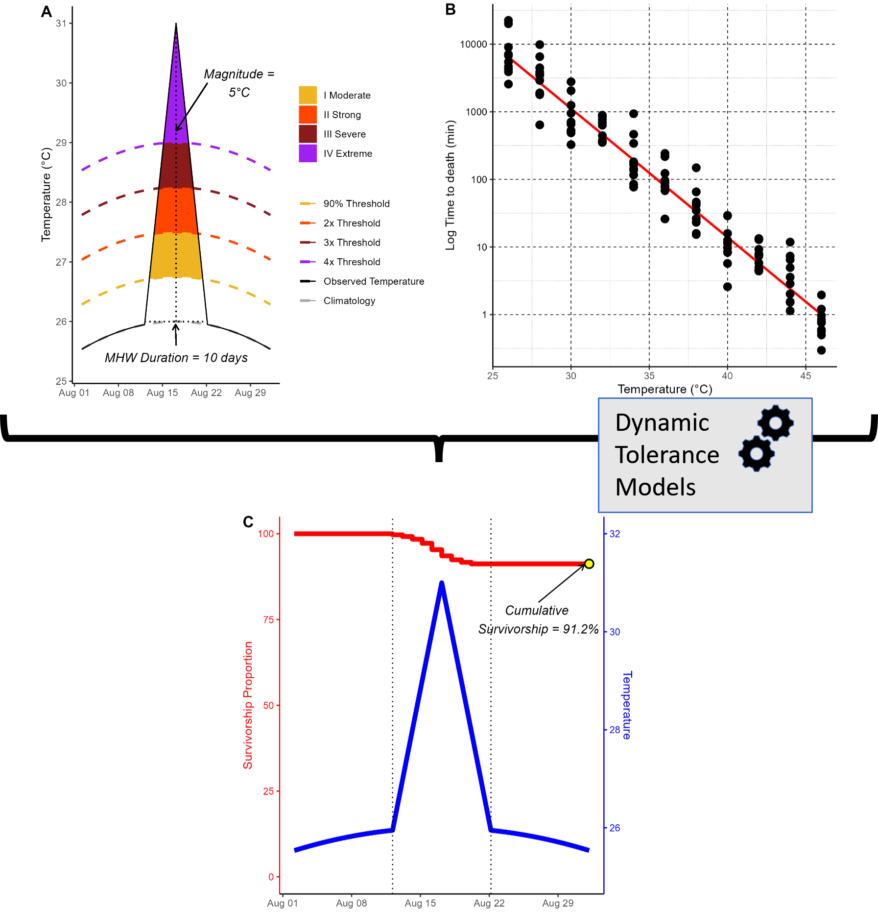

![]()
I am thrilled to post that the first publication out of my PhD was recently published in Journal of Animal Ecology (Villeneuve and White (2024))! I authored a blog post on the journal’s blog, so I won’t repeat myself too much here. Rather, I want to go over why we did this study in the first place, and my top takeaways.

The kernel of an idea for this paper really took off when Easton and I were in Madagascar, and in between field work with our collaborators we talked a lot about extreme events and how to measure them, heatwaves in particular. Excellent work by Hobday et al. (2018) used statistical analysis of timeseries to understand when a heat event was anomalously extreme, and thus a heatwave. While such an approach allows one to account for variation in the temporal (duration) and thermal (intensity/magnitude) dimensions, the issue remained that comparing events with multiple measurement dimensions is difficult. Among the questions we asked was: what is worse, a long but mild heatwave, or a short but intense one? And, what if we could classify extreme events based on their ecological effects, rather than their statistical novelty?
There are a few different ways we could have gone around this. We could have taken an empirical approach, wherein I either observe organism responses in the field to different types of heatwave (data availability issues, not easily comparable between events) or I simulate heatwaves in the lab and observe responses (more controlled, but I could only replicate a dozen or so realistic heatwaves). We decided that, given the wide-open nature of the question to conduct an in silica simulation to generate a continuous response surface across many (527!) heatwaves varying in magnitude and duration. As our response, we selected survival resulting from thermal death time models (Rezende et al. (2020), Jørgensen et al. (2021)).
Now, I will be the first to stop here and point out that heatwaves do not just affect survival. Temperature is a master factor, and can affect reproduction, morphology, development rate, metabolism, growth, and behavior, all of which we could have used as our response. I chose survival because 1) we have models of thermal tolerance that lend themselves really well to continuous time series that are just begging to be tested more extensively, and 2) frankly, other than species movement, death has a ton of public, conservation, and management visibility and is the ultimate ecological repercussion. When the 2021 Pacific Northwest heatdome hit Puget Sound, billions of intertidal organisms died on the shorelines. That is going to leave an indelible effect on the population dynamics of these species in the area. I also see mass mortality events from events like heatwaves as the first step in the march to local extirpation, and then global extinction. That may be a dramatic reading, especially since mobile animals can just move out of the way. But for sessile organisms (I’m thinking of you, corals and bivalves), there is no escape.
At this point, I am going to actually gloss over the results of our study (you can read the article or JAE blog entry to get those minutiae) and just deliver my big takeaways:
Short, hot events can have the same impact as long, mild events.
Following above, we ignore short events (that occur especially in coastal areas) at our peril.
CTmax, or critical thermal limits, can be misleading. We discovered that some organisms with higher CTmax actually had lower survival rates than lower CTmax individuals if they lose that high thermal tolerance quicker than a low CTmax counterpart. Think tortoise and the hare, but in thermal stress space.1
Mechanistic models that rely on first principles are a great way to predict ecological responses to complex phenomena
So, what’s next? This was obviously a simulation experiment, so someone needs to test some of our conclusions with empirical data! I will work on some aspects myself, but I feel this work stood on the shoulders of some really impressive and creative science (@ all teams I cite here) and can only presume more exciting work is waiting in the wings.
References
Footnotes
One thing I wish I cautioned more in my paper was that acute and chronic tolerance may not be an inherent tradeoff (see Rezende, Castañeda, and Santos (2014), Castañeda, Rezende, and Santos (2015) , Jørgensen, Malte, and Overgaard (2019), Kovacevic, Latombe, and Chown (2019) for the full debate). I am not picking sides at this point, other than saying there’s room for research from a more adaptive underpinnings angle in non-model species. The fact remains that variation in acute and chronic tolerance exists, and we don’t have any good explanations as to why that is so.↩︎